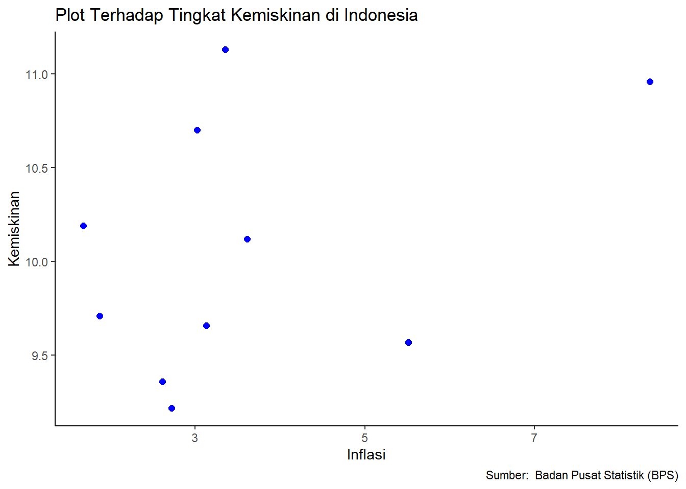

Analisis pengaruh inflasi terhadap kemiskinan di Indonesia dalam 10 tahun terakhir (2014-2023)
Metode Penelitian Politeknik APP Jakarta
Author
Shilviana Belo (220204214)
Published
January 25, 2024
Politeknik APP Jakarta
1 Pendahuluan
1.1 Latar Belakang
Dalam usaha meningkatkan kesejahteraan masyarakat, pemerintah perlu mendorong pembangunan ekonomi dari tingkat pusat hingga desa agar kualitas hidup masyarakat dapat ditingkatkan. Menurut Suharto (2014:4), kualitas hidup manusia mencakup peningkatan standar hidup melalui pelayanan sosial dan jaminan sosial untuk seluruh lapisan masyarakat, terutama kelompok yang kurang beruntung. Hal ini melibatkan peningkatan keberdayaan melalui sistem dan kelembagaan ekonomi, sosial, dan politik, serta penyempurnaan kebebasan melalui perluasan aksesibilitas dan pilihan-pilihan kesempatan sesuai dengan aspirasi, kemampuan, dan standar kemanusiaan. Salah satu tantangan yang dihadapi pemerintah daerah dan masyarakat adalah risiko inflasi dan peningkatan jumlah orang miskin. Pemerintah berusaha mengendalikan laju kenaikan harga untuk mencegah dampak negatifnya terhadap daya beli masyarakat. Meskipun inflasi tinggi dapat diterima jika pendapatan masyarakat juga tinggi, namun dampaknya lebih terasa oleh masyarakat berpenghasilan tetap dan rendah.
Mantan Presiden Amerika Serikat, Ronald Reagan, menggambarkan inflasi sebagai sesuatu yang sama menakutkannya dengan tindakan kriminal, sementara Karl Otto Pohl, mantan presiden German Bundesbank, menyamakan inflasi dengan pasta gigi yang sulit untuk dikontrol. Inflasi dianggap berbahaya sehingga perlu diawasi oleh pemerintah. Dampak buruk inflasi yang tidak terkendali termasuk risiko sosial dan peningkatan jumlah orang miskin. Pada dasarnya, masyarakat miskin akan semakin terpukul oleh kenaikan harga, yang dapat menyebabkan kemiskinan baru. Badan Pusat Statistik (BPS) mendefinisikan kemiskinan sebagai ketidakmampuan ekonomi untuk memenuhi kebutuhan dasar makanan dan non-makanan.
BPS menetapkan dua jenis garis kemiskinan, yaitu Garis Kemiskinan Makanan (GKM) dan Garis Kemiskinan Non Makanan (GKNM), yang mencakup kebutuhan minimum untuk perumahan, sandang, pendidikan, dan kesehatan. Ukuran kemiskinan ini berkaitan dengan konsep bahwa seseorang dianggap miskin karena keadaan ekonominya.Lingkaran setan kemiskinan, seperti yang dijelaskan oleh Jhingan, menyoroti kondisi di mana produktivitas rendah disebabkan oleh kekurangan modal dan keterbelakangan perekonomian, yang pada gilirannya menyebabkan pendapatan rendah, permintaan rendah, investasi rendah, modal kurang, dan produktivitas rendah. Selain inflasi, masih banyak faktor lain yang dapat menyebabkan kemiskinan, seperti jumlah penduduk, pengangguran, pertumbuhan ekonomi, dan aspek budaya. Dalam penelitian ini, fokus penelitiannya adalah tingkat inflasi, dengan keyakinan bahwa dampak inflasi dan peningkatan jumlah kemiskinan.
1.2 Ruang Lingkup
Kumpulan data inflasi dan tingkat kemiskinan di Indonesia dari tahun 2014 hingga 2023 menjadi dasar analisis. Sumber data yang didapat berasal dari Badan Pusat Statistik (BPS) atau lembaga terpercaya lainnya dan Menerapkan analisis regresi linier untuk menilai dampak inflasi terhadap kemiskinan secara lebih mendalam.
1.3 Rumusan Masalah
Berdasarkan uraian latar belakang masalah diatas, maka terdapat beberapa indikator yang menjadi rumusan masalah dalam penelitian ini. Adapun rumusan masalah tersebut adalah
Apakah inflasi berpengaruh terhadap kemiskinan di Indonesia selama 10 tahun terakhir ?
1.4 Tujuan Penelitian
Tujuan dibuatnya artikel ini yaitu untuk Menjelaskan secara rinci dan mendalam tentang hubungan antara tingkat inflasi dan tingkat kemiskinan di Indonesia selama periode sepuluh tahun terakhir. Tujuan utama adalah memahami sejauh mana inflasi dapat memengaruhi kemiskinan.
1.5 Manfaat Penelitian
Manfaat dibuatnya artikel ini yaitu sebagai Media informasi yang penting dan relevan bagi pembuat kebijakan, baik di tingkat pemerintah maupun organisasi non-pemerintah. Dengan pemahaman yang lebih baik tentang hubungan antara inflasi dan kemiskinan, diharapkan pembuat kebijakan dapat merancang strategi yang lebih efektif.
1.6 Package
Packages yang digunakan dalam analisis ini, sebagai berikut :
library(tidyverse)
── Attaching core tidyverse packages ──────────────────────── tidyverse 2.0.0 ──
✔ dplyr 1.1.4 ✔ readr 2.1.4
✔ forcats 1.0.0 ✔ stringr 1.5.1
✔ ggplot2 3.4.4 ✔ tibble 3.2.1
✔ lubridate 1.9.3 ✔ tidyr 1.3.0
✔ purrr 1.0.2
── Conflicts ────────────────────────────────────────── tidyverse_conflicts() ──
✖ dplyr::filter() masks stats::filter()
✖ dplyr::lag() masks stats::lag()
ℹ Use the conflicted package (<http://conflicted.r-lib.org/>) to force all conflicts to become errors
library(readxl)library(WDI)
2 Studi Pustaka
2.1 Kemiskinan
Menurut Muhammad (2022:160), tingginya angka kemiskinan masih menjadi tantangan serius dalam pembangunan bagi negara-negara berkembang, termasuk Indonesia. Kemiskinan dianggap sebagai salah satu masalah utama di banyak negara berkembang, dan seseorang dikategorikan sebagai miskin jika tidak dapat memenuhi kebutuhan dasar seperti makanan, pakaian, obat-obatan, dan tempat tinggal yang layak (Hardinandar, 2019). Kondisi sosial dan ekonomi kemiskinan juga dianggap sebagai tolok ukur keberhasilan pembangunan suatu daerah (Oktaviana, 2021).
Ari Mulianta (2019:280) mengidentifikasi empat faktor umum yang menyebabkan kemiskinan, yaitu:
Faktor individu: Berkaitan dengan aspek patologi, termasuk kondisi fisik dan psikologi individu yang miskin. Kemiskinan dapat disebabkan oleh perilaku, pilihan, atau kemampuan individu tersebut dalam menghadapi kehidupannya.
Faktor sosial: Terkait dengan ketidaksetaraan sosial yang dapat menjebak seseorang dalam kemiskinan, seperti diskriminasi berdasarkan usia, status sosial, gender, atau etnis.
Faktor kultural: Berkaitan dengan kondisi atau kualitas budaya yang dapat menyebabkan kemiskinan. Konsep “kemiskinan kultural” atau “budaya kemiskinan” menghubungkan kemiskinan dengan kebiasaan hidup atau mentalitas individu, seperti sikap malas, fatalisme, kurangnya semangat berwirausaha, dan kurang menghormati etos kerja.
Faktor struktural: Menunjukkan pada struktur atau sistem yang tidak adil, tidak sensitif, dan sulit diakses, sehingga menyebabkan seseorang atau kelompok tertentu tetap miskin. Sebagai contoh, penerapan sistem ekonomi neoliberalisme di Indonesia dapat menjebak petani, nelayan, dan pekerja sektor informal dalam kemiskinan.
Jhingan (2014:33-35) menjelaskan bahwa negara terbelakang sering terjerat dalam apa yang disebut sebagai “lingkaran setan kemiskinan.” Lingkaran setan ini menciptakan deretan kekuatan yang saling berinteraksi sehingga orang miskin tetap dalam kondisi miskin. Misalnya, pengaruh inflasi terhadap tingkat kemiskinan di negara miskin dapat terlihat dalam siklus di mana masyarakat miskin mengalami kekurangan makanan, menyebabkan kesehatan buruk, menurunkan kapasitas kerja, menghasilkan pendapatan rendah, dan pada akhirnya mempertahankan kondisi kemiskinan. Dalam konteks ini, dapat disimpulkan bahwa “suatu negara miskin karena ia miskin” yang mencerminkan dampak kompleks dari faktor-faktor yang saling terkait, termasuk inflasi.
2.2 Inflasi
Inflasi dapat diartikan sebagai suatu kondisi di mana terjadi peningkatan secara umum dan berkelanjutan dalam tingkat harga barang dan jasa di suatu perekonomian. Untuk dapat dikategorikan sebagai inflasi, suatu peristiwa harus memenuhi tiga komponen utama, yaitu kenaikan harga, bersifat umum, dan berlangsung terus-menerus.
Kenaikan Harga:
Pada dasarnya, inflasi mencerminkan peningkatan harga barang dan jasa. Fenomena ini dapat terjadi akibat berbagai faktor, seperti meningkatnya permintaan konsumen, biaya produksi yang naik, atau pun faktor-faktor eksternal seperti kenaikan harga bahan baku atau tekanan inflasi global.
Bersifat Umum:
Inflasi bersifat umum ketika kenaikan harga tidak terbatas pada satu atau beberapa jenis barang atau jasa saja, melainkan melibatkan sebagian besar komoditas yang diperdagangkan dalam perekonomian. Dengan kata lain, inflasi mencakup berbagai sektor ekonomi dan tidak terfokus pada satu sektor tertentu.
Berlangsung Terus-Menerus:
Inflasi diidentifikasi sebagai suatu keadaan yang berlangsung secara terus-menerus atau dalam periode waktu tertentu. Ini menunjukkan bahwa kenaikan harga tidak bersifat sementara atau sekadar fluktuasi singkat, tetapi lebih bersifat keberlanjutan dalam jangka waktu tertentu.
Dalam praktiknya, tingkat inflasi diukur dengan indeks harga konsumen (IHK), yang mencakup sejumlah barang dan jasa yang umum dikonsumsi oleh masyarakat. Pemerintah dan bank sentral umumnya memonitor tingkat inflasi untuk menjaga stabilitas ekonomi dan mengambil langkah-langkah kebijakan moneter yang diperlukan agar inflasi tetap berada dalam batas yang dapat diterima. Inflasi yang terlalu tinggi atau terlalu rendah dapat memiliki dampak negatif pada perekonomian, seperti menyusutnya daya beli masyarakat atau kesulitan dalam merencanakan investasi dan produksi. Oleh karena itu, pengendalian inflasi menjadi salah satu fokus penting dalam pengelolaan kebijakan ekonomi.
3 Metode Penelitian
3.1 Data
Tahun
Inflasi
Persentade Kemiskinan
2014
8,36
10,96
2015
3,35
11,13
2016
3,02
10,70
2017
3,61
10,12
2018
3,13
9,66
2019
2,72
9,22
2020
1,68
10,19
2021
1,87
9,71
2022
5,51
9,57
2023
2.61
9,36
Sumber : Badan Pusat Statistik (BPS)
3.2 Metode analisis
Dalam analisis data, penelitian ini mengadopsi metode analisis regresi linier berganda (multiple regression analysis), serta menggunakan metode kuantitatif dan deskriptif. Pendekatan kuantitatif melibatkan perhitungan angka-angka untuk menganalisis faktor-faktor yang memengaruhi inflasi dan dampaknya terhadap tingkat kemiskinan di Indonesia. Sementara itu, metode deskriptif digunakan untuk menyajikan gambaran sistematis dan faktual mengenai perkembangan setiap variabel serta kondisi kemiskinan ekonomi. Dalam konteks analisis kuantitatif, penelitian ini melibatkan perhitungan dan pengukuran terhadap faktor-faktor yang berperan dalam mempengaruhi inflasi dan kemiskinan. Metode regresi linier berganda digunakan untuk menilai sejauh mana hubungan antara variabel independen (faktor-faktor pengaruh) dengan variabel dependen (kemiskinan) dan seberapa besar kontribusi masing-masing faktor terhadap variabilitas kemiskinan.
library("readxl")dat<-read_excel("Data 3.xlsx")library(ggplot2)ggplot(data=dat, aes(x=Inflasi, y=Kemiskinan))+geom_point(color='blue', size=2)+labs(title="Plot Terhadap Tingkat Kemiskinan di Indonesia",x="Inflasi",y="Kemiskinan",caption ="Sumber: Badan Pusat Statistik (BPS)") +theme_classic()

4.2 Analisis masalah
Hasil pengaruh inflasi terdadap tinfkat kemiskinan di Indonesia ditunjukkan sebagai berikut:
Call:
lm(formula = Kemiskinan ~ Inflasi, data = dat)
Residuals:
Min 1Q Median 3Q Max
-0.74701 -0.51487 -0.03487 0.35178 1.09928
Coefficients:
Estimate Std. Error t value Pr(>|t|)
(Intercept) 9.5867 0.4492 21.339 2.45e-08 ***
Inflasi 0.1325 0.1110 1.195 0.266
---
Signif. codes: 0 '***' 0.001 '**' 0.01 '*' 0.05 '.' 0.1 ' ' 1
Residual standard error: 0.6597 on 8 degrees of freedom
Multiple R-squared: 0.1514, Adjusted R-squared: 0.04531
F-statistic: 1.427 on 1 and 8 DF, p-value: 0.2665
Hasil di atas merupakan hasil perkiraan OLS dengan menggunakan model regresi multivariat. Hasil regresi ini dimanfaatkan untuk memahami korelasi antara variabel terikat dan variabel bebas. Variabel terikat yang dianalisis adalah tingkat kemiskinan di Indonesia, sementara variabel bebas yang digunakan adalah tingkat inflasi. Berdasarkan hasil regresi, dapat disimpulkan bahwa peningkatan inflasi sebesar 1 persen akan menyebabkan peningkatan tingkat kemiskinan di Indonesia sebesar 0.1325. Sebaliknya, penurunan inflasi akan mengurangi tingkat kemiskinan di Indonesia sebesar -0.1325. Hal ini menunjukkan bahwa inflasi memiliki dampak yang signifikan terhadap tingkat kemiskinan di Indonesia.
5 Kesimpulan
Terdapat korelasi antara dampak inflasi terhadap tingkat kemiskinan di Indonesia selama dekade terakhir, mulai dari tahun 2014 hingga 2023. Hubungan antara tingkat kemiskinan di Indonesia dan inflasi tergolong lemah. Inflasi menunjukkan nilai positif dan memiliki dampak yang cukup signifikan terhadap tingkat kemiskinan di Indonesia. Oleh karena itu, peningkatan tingkat inflasi di Indonesia diyakini dapat secara signifikan meningkatkan tingkat kemiskinan di negara Indonesiat.
6 Referensi
Persentase Penduduk Miskin Menurut Provinsi (Persen), 2014-2023 | Badan Pusat Statistik (BPS). (2023). Retrieved 25 January 2024, from https://jatim.bps.go.id/indicator/23/344/2/persentase-penduduk-miskin-menurut-provinsi-.html
Inflasi Menurut Kelompok Pengeluaran, 2014-2023 | Satu Data Perdagangan. (2023). Retrieved 25 January 2024, from https://satudata.kemendag.go.id/data-informasi/perdagangan-dalam-negeri/inflasi-2020
Puspaningtyas, L., Afifi, M., & Ismiwati, B. (2023). Analisis pengaruh inflasi, pengangguran, kemiskinan dan kurs Rupiah terhadap pertumbuhan ekonomi di NTB tahun 2005-2021. Jurnal Oportunitas: Ekonomi Pembangunan, 2(1).
Sandi, F., Halim, A., & Furqan, F. (2023). Pengaruh inflasi terhadap tingkat kemiskinan. In FORUM EKONOMI: Jurnal Ekonomi, Manajemen dan Akuntansi (Vol. 25, No. 4, pp. 659-666).